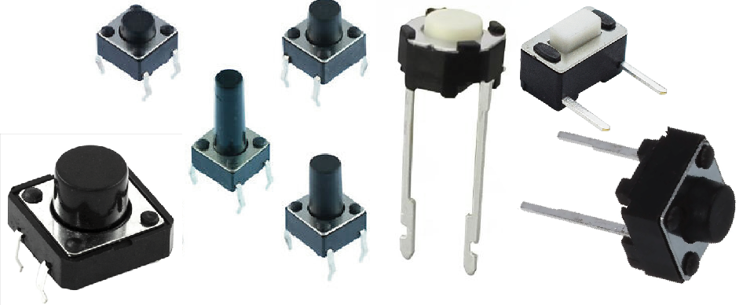
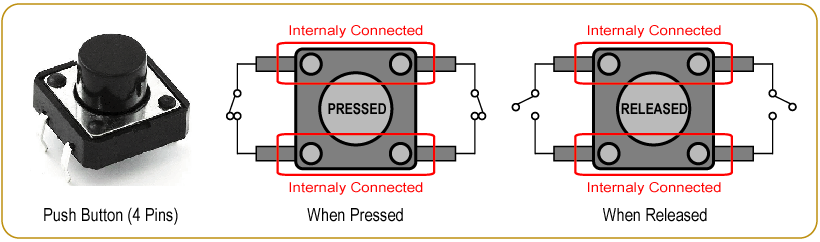
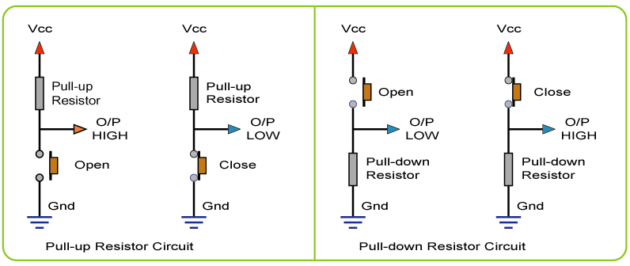
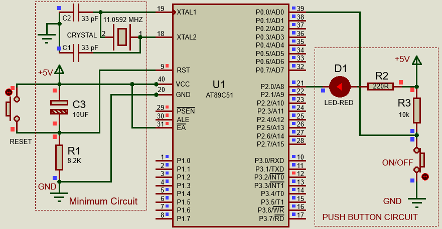
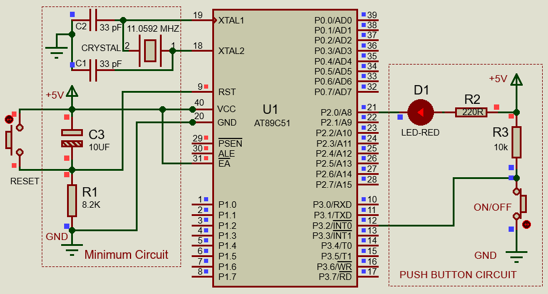

Introduction:
A very simple and easy way to provide for human interaction with the microcontroller
is to insert a button into the circuit. We communicate with computers using two main
input devices: the mouse and the keyboard. A keyboard is nothing more than a bunch of
buttons. Adding a button or switch to the circuit enables the microcontroller to
receive human input.
In the first experiment, we’ve focused on output only. Now we’re going to go to the
other end of spectrum and play around with inputs. Push button switches are widely
used in embedded system seen in very simple to highly complex systems. So, knowledge
about interfacing them to any microcontroller is very essential in designing such
systems. This lesson deals with the technicalities of push button interfacing with
8051 microcontroller and includes a simple example of microcontrollers digital Read
function and then so as to ON and OFF an LED.
Hardware Discussion: Push Buttons
A push-button (also spelled pushbutton) or simply button or tactile
switch is a component that connects two points in a circuit when you press it. Buttons
are typically made out of hard materials and its surface is usually flat or shaped to
accommodate the human finger or hand, so as to be easily depressed or pushed.

Fig: Some of available Push Buttons
Push Button Features :
- Two state mechanism. Initially, it remains in off state or normally
- open state but when it is pressed, we can say it close state.
- Available Momentary and Latching types
- Available size, color, shape etc.
- Available in Vertical and Horizontal pin outs.
- High Durability
- Click response high.
A typical push button switch has two active terminals that may be normally open
or closed and changes its state when pressed or depressed. Sometimes we get 4 pins
with push buttons having a paired (internally connected) terminals of each pin which
is illustrated in the following figure. There are also some push buttons are normally
closed but open when is pressed. Those are used for some special purposes.

Fig: 4 Pin Push Button Connections and Actions
How it works?
If we connect the push button switch directly to a Microcontroller to get digital input,
It means switch one pin is connected to Ground or 5v Vcc and another pin connected to 2
Microcontroller digital pin. In this case, the Microcontroller is read unstable input
from the push button.
So, we need to connect a “pull-up” or “pull-down” resistors circuit to stabilizes
the input, when using the switch.

Fig: 4 Pin Push Button Connections and Actions
Pull-up Resistors :
If the push button one pin is connected to the Vcc through a resistor
and the other pin is connected to the ground, this circuit known as the pull-up resistor
circuit. In this case, the push button output is High(1) when the button is open, and the
output of the push button is Low(0) when the button is pressed.
Pull-down Resistors :
If the push button one pin is connected to the ground through a resistor and the other
pin is connected to the Vcc, this circuit known as the pull-down resistor circuit. In this
case, the push button output is Low(0) when the button is open, and the output of the push
button is High(1) when the button is pressed.
Circuit Diagram : Push Button Interfacing to 8051.

Fig: Push Button interfacing with AT89S51
Circuit Discussion :
A push button switch is connected to PORT-0 PIN-0. The SW is connected externally
with a pull-up resistor since there is no internal pull-up resistor for port 0.
The other end of the push button is connected to ground.
The voltages at the pins will be VCC (Approx) when the button is not pushed.
The input pin will get grounded on pressing the button. The LED connected to the
PORT-2 PIN-0 with a series resistor to limit the current. Our target is to ON the
LED as long as the Button (ON) is pressed and hold and vice versa.
Code Discussion:
Post Run Discussion : Button Read Using Interrupt
Let's start with a simple example - using an Interrupt to monitor a button press.
To start, we'll take a sketch you've likely seen before - the "Button" example
sketch included above in this article. This time, to read the button using an
external interrupt source we will connect the switch to the INT0 pin at P3.2
An ISR is just like any other subroutine we write inside a
program, except for the difference that an ISR must always end with a
RETI instruction and not with a RET instruction
(as in the case of subroutines). An ISR when evoked, executes a certain lines
of code that does some kind of operations. It can be anything as defined by
the programmer. The only condition is that the first line of ISR must begin
from the corresponding vector address. Vector address of INT0 is 0003H and that
of INT1 is 0013H for the 8051 Microcontrollers.
Circuit Diagram : Push Button Reading via External Interrupt.

Fig: Push Button Reading via External Interrupt
|